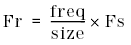

DSP_SINFIT
This API generates the ideal sine wave which is most suitable to the distorted sine wave in the specified array.
For the distorted sine wave data stored in src, this API performs DFT operations to determine the ideal sine wave, and returns the ideal sine wave elements to result. Also, the ideal sine wave parameters are returned to amplitude, phase, and offset as follows:
amplitude : A, amplitude of the ideal sine wave
phase : P, phase of the ideal sine wave in radians
offset : B, DC offset of the ideal sine wave.
The resulting ideal sine wave can be expressed as follows:
A × sin(2 × π × f × t + P) + B
The frequency "Fr" of the ideal sine wave is defined as follows:

where Fs is the sampling frequency.
The time "t" is as follows:
t = n / Fs
where
n = 1, 2, 3, 4,..., N (size).
This API is defined in the header file /opt/hp93000/soc/prod_com/include/MAPI/libdsp.h.
Syntax
DSP_SINFIT(ARRAY_I& src, ARRAY_D& result,
DOUBLE *amplitude, DOUBLE *phase,
DOUBLE *offset, INT freq);
DSP_SINFIT(INT *src, DOUBLE *result,
DOUBLE *amplitude, DOUBLE *phase,
DOUBLE *offset, INT size, INT freq);
DSP_SINFIT(ARRAY_D& src, ARRAY_D& result,
DOUBLE *amplitude, DOUBLE *phase,
DOUBLE *offset, INT freq);
DSP_SINFIT(DOUBLE *src, DOUBLE *result,
DOUBLE *amplitude, DOUBLE *phase,
DOUBLE *offset, INT size, INT freq );I/O |
Parameter |
Description / Range |
|---|---|---|
I |
src |
Source array |
O |
result |
Elements of the ideal sine wave size ≤ size of result |
O |
amplitude |
Amplitude of the ideal sine wave |
O |
phase |
Phase of the ideal sine wave in radians |
O |
offset |
DC offset of the ideal sine wave |
I |
size |
Number of elements to be processed 4 ≤ size ≤ 2097152 size ≤ (size of source array) |
I |
freq |
Number of measurement signal periods, which is used to calculate the relative frequency freq < size |
Example
double array1[1024], array2[1024];
double amplitude, phase, offset;
.
.
DSP_SINFIT(array1, array2, &litude, &phase,
&offset, 1024, 1);DSP_SINFIT determines the ideal sine wave that best fits to the distorted sine wave data that is contained in the first 1024 elements of array array1 .
The elements of the resulting ideal sine wave are returned to array array2 . The parameters of the ideal sine wave (A, P, and B) are returned to amplitude , phase , and offset as follows:
amplitude: |
A, amplitude of the ideal sine wave |
phase : |
P, phase of the ideal sine wave in radians |
offset : |
B, DC offset of the ideal sine wave |